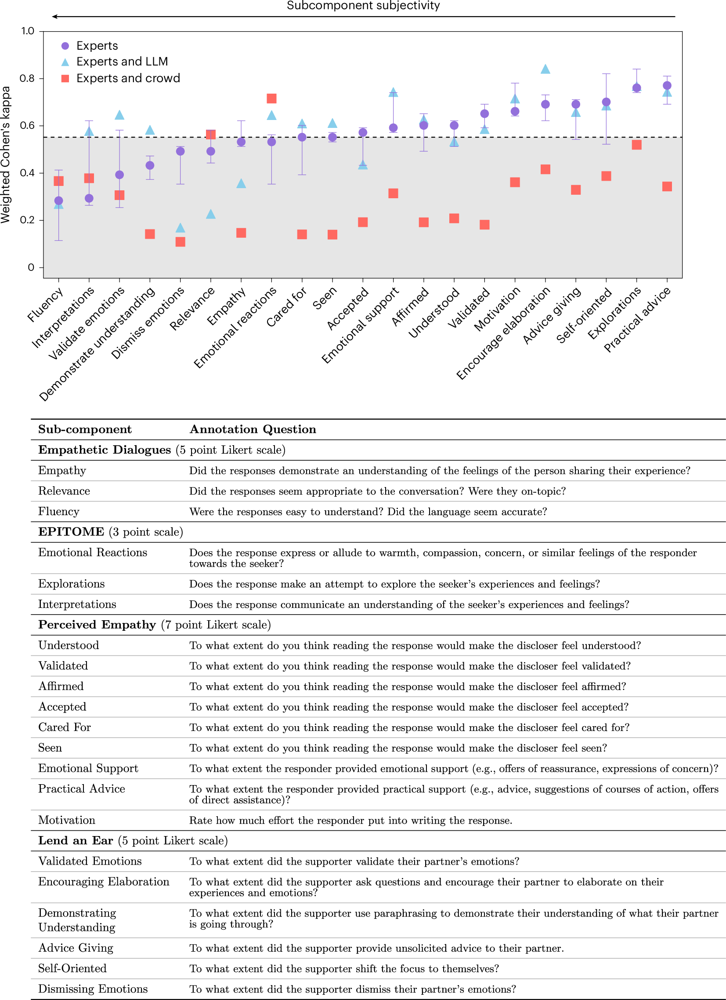
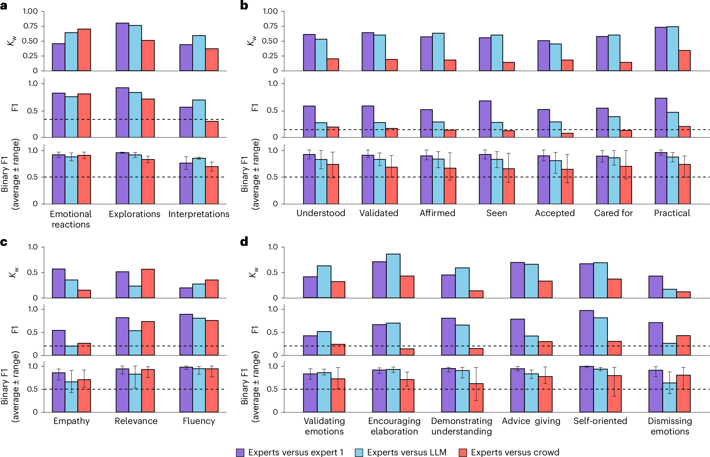

论文资料
When large language models are reliable for judging empathic communication
已取得公开摘要，图文解读尚未完成
已取得公开摘要，图文解读尚未完成。取得完整资料并通过核验后，这个地址会更新为图文解读。
公开摘要
Large language models (LLMs) excel at generating empathic responses in text-based conversations. But, how reliably do they judge the nuances of empathic communication? Here we investigate this question by comparing how experts, crowdworkers and LLMs annotate empathic communication across four evaluative frameworks drawn from psychology, natural language processing and communications applied to 200 real-world conversations where one speaker shares a personal problem and the other offers support. Drawing on 3,150 expert annotations, 2,844 crowd annotations and 3,150 LLM annotations, we assess interrater reliability between these three annotator groups. We find that expert agreement is high but varies across the frameworks’ subcomponents depending on their clarity, complexity and subjectivity. We show that expert agreement offers a more informative benchmark for contextualizing LLM performance than standard classification metrics. Across all four frameworks, LLMs consistently approach this expert level benchmark and exceed the reliability of crowdworkers. These results demonstrate how LLMs, when validated on specific tasks with appropriate benchmarks, can support transparency and oversight in emotionally sensitive applications including their use as conversational companions.
原图未改动。以下图注来自标注的来源，不据此补写摘要未报告的实验结论。
已取得的论文原图

原文图注与出处
Interrater reliability (quadratically weighted κ w )) for empathic communication across annotator pairs for each subcomponent grouped by framework ( n = 200 conversations; 21 subcomponents). In the evaluation of experts with each other, a circle represents the median κ w between the three expert pairs. Experts comparisons with the LLM (Gemini 2.5 Pro) and crowd compare median expert annotations with the LLM and crowd, respectively. The beeswarm plot ensures all data points are visible by applying a horizontal jitter to avoid overlap. Dotted lines represent the 25th, 50th and 75th percentiles of weighted Cohen’s kappa.
Kumar, Aakriti et al.
原文图页 · CC BY 4.0

原文图注与出处
Top: interrater reliability (quadratically weighted κ w ) across annotator pairs for each empathic communication subcomponent. In the evaluation of experts with each other, the circle represents the median κ w and the error bar represents the κ w range between the three pairs. Experts comparisons with the LLM (Gemini 2.5 Pro) and crowd compare median expert annotations with the LLM and crowd, respectively. Bottom: empathic communication frameworks with verbatim annotation questions.
Kumar, Aakriti et al.
原文图页 · CC BY 4.0

原文图注与出处
Experts versus expert 1 (purple), experts versus LLM (blue) and experts versus crowd (red) present agreement metrics between the median expert annotation and expert 1, Gemini 2.5 Pro and the crowd. a – d , We present results for four datasets: EPITOME ( a ), Perceived Empathy ( b ), Empathetic Dialogues ( c ) and Lend an Ear ( d ) ( n = 50 conversations per dataset). Random classifier baselines are indicated by dashed lines. The error bars represent the full range of binary F1 scores depending on threshold choice.
Kumar, Aakriti et al.
原文图页 · CC BY 4.0